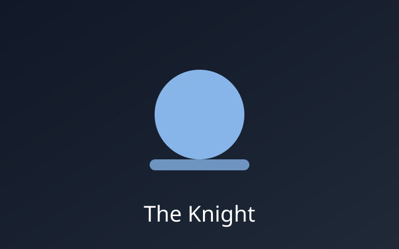
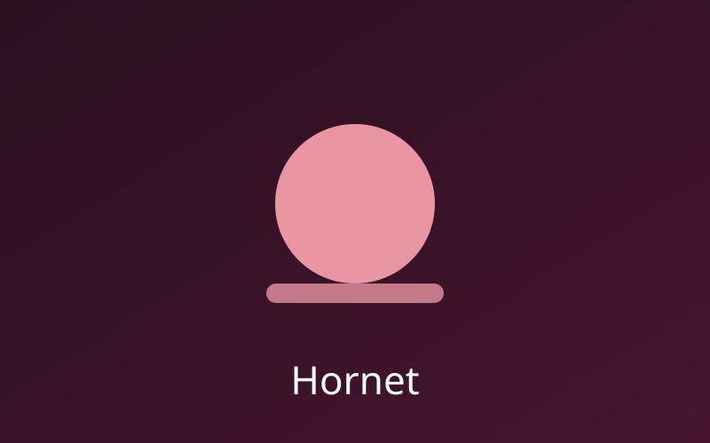
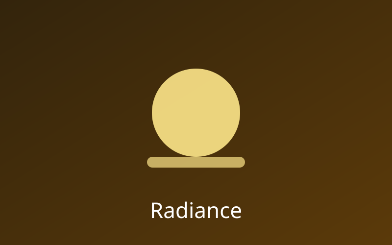

O Cavaleiro
O protagonista da jornada, responsável por explorar Hallownest e enfrentar a Infecção.

O protagonista da jornada, responsável por explorar Hallownest e enfrentar a Infecção.

Uma guerreira ágil e protetora de Hallownest, com forte ligação com o reino.

Entidade responsável pela Infecção que assolou Hallownest.